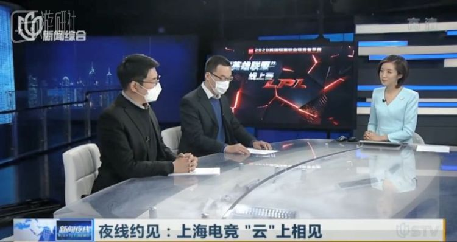
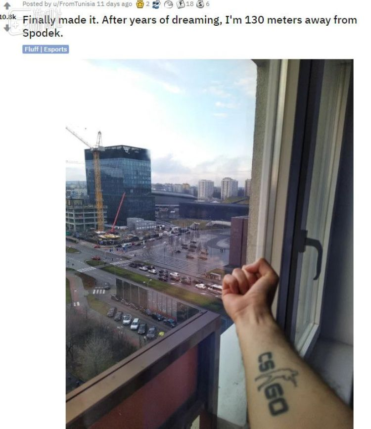
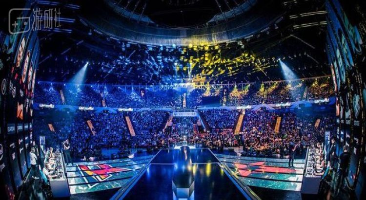
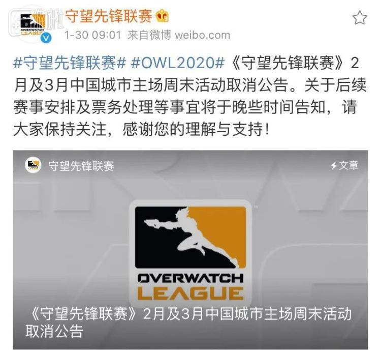

NBA：各球队需做好空场比赛的准备
原文链接 备份链接 图片来源：视觉中国 “ NBA已经提醒各球队需要准备应急预案——仅在必要人员在场的情况下进行比赛。 ” 虎扑篮球3月7日消息，据NBA记者Shams Charania报道，消息人士透露，联盟已经向各支球队发放了备忘录， …
电竞行业损失难以估量的一年。
3月9日，玩家们打开《英雄联盟》职业联赛春季赛直播间，看到两位带着硕大而显眼的口罩的解说。
“让我猜猜，这是记得和猫哥。”弹幕里玩家们这样调侃着。
作为国内最受瞩目的电竞赛事之一，LPL春季赛第二周的比赛，经历了漫长的休赛期后，终于在3月9日这一天于线上拉开了帷幕。
此时全球《英雄联盟》职业联赛都笼罩在疫情的阴影下，欧洲联赛将总决赛场地从布达佩斯更换到柏林，日本方面采用无观众的空场比赛模式，新建立的太平洋赛区（简称PCS）不得不延迟开赛。疫情严重的韩国，在经历了主持人疑似感染的有惊无险后，随着疫情发展还是宣布了休赛。
而昨天LPL的比赛过程中，无论是解说还是接受采访的选手，都没有在镜头前露出正脸。解说则在比赛开始前向怀着担忧的观众透露，目前在演播室里的工作人员都佩戴了口罩，演播室也进行了全方位消毒。所有人都在努力向观众传达一个信息：疫情没有过去。
整个比赛过程相比从前省略了许多环节，LPL比赛节奏看上去加快了不少，过程似乎也变简单了。
当然这背后情况并非如此简单。在线上赛计划实行前，LPL官方一再和各个俱乐部强调，所有身在俱乐部的选手，必须在完成俱乐部隔离情况下，前往经过安全消毒的基地进行比赛。
为了保证线上比赛能够顺利进行，LPL官方在2月26日-29日进行了线上公开训练赛，对训练地点网络进行了测评。同时为了保证比赛公正性，官方还派出指定人员前往比赛地点进行监管。而如果需要从上海前往外地俱乐部，指定人员还需要提前前往该地区并隔离14天。
作为较早复工的行业，LPL线上开赛受到了一些电视台的关注，他们对相关人员进行了报道，并做了采访。接受采访的拳头游戏中国负责人在电视直播中透露，“我们从2月初就已经开始做准备了。”

为了弥补过去一个多月失去的赛程时间，LPL赛程将原本六天一休的比赛日程改为七天，并为大部分比赛日增加了比赛，希望能赶在季中赛之前完成赛程。
近期上海发布了《上海市促进文化创意产业发展财政扶持资金申报指南》，其中明确指出对演艺、文旅、电竞、文化会展等受疫情影响较大、主动创新转型、信用良好、符合条件的中小微文创企业，优先予以支持。从某种意义上讲，上海地区对于特殊期间的电竞产业给予了相当的优待。
但是准备充分也不能保证万事无忧，季中赛日期推迟，洲际赛情况不明，在中国以外，疫情还影响着其他赛区，电竞行业在这场疫情下，也是一番人间百态。
空场
欧洲疫情让足球五大联赛也受到了疫情影响，为了保证比赛进行，部分俱乐部不得已宣布空场进行比赛。
在他们之前，波兰卡托维兹的电竞比赛率先体验了一把特殊时期的空场。相信不少人都了解欧洲玩家对于CS:GO的狂热，但肺炎疫情的到来，给这场原本的电竞盛宴泼下一盆冷水。
来自突尼斯的CS:GO狂热爱好者Mouadh，为即将到来的IEM卡托维兹CS:GO比赛感到兴奋，他在Reddit上发帖，“我做到了！经过多年对梦想的追寻，我现在距离Spodek只有130米！”Spodek Arena是IEM举办CS:GO常用场地，可容纳1万多人同时观赛，也是许多CS:GO玩家的朝圣之地。

然而这个帖子在被发出后不久，官方遭到了官方的“无情拒绝”。距离比赛还有18小时时，IEM官方声明，出于对观众健康情况的考虑，他们决定本届IEM卡托维兹将不对外开放。
Mouadh为了观看这场比赛筹划数年，如今疫情带来的坏消息打破了他所有的计划。这个帖子一度被推到Reddit首页，数万条回复中，网友们对这位狂热玩家的遭遇表示了同情。

IEM卡托维兹的组织者CARMAC得知这件事后，特意为Mouadh安排了一场见面会。
CARMAC比Mouadh更郁闷。在2月，疫情在欧洲没有像今天这样蔓延的时候，他们曾得到场馆方面的多次保证，比赛可以顺利进行。当然IEM组织方并没有懈怠，他们从2月起就关注着事件发展，也为此多次开会商讨疫情影响和必要措施。
以往气氛火热的卡托维兹CS:GO比赛现场
然而最不理想的情况还是发生了，在比赛开始前几个小时，政府吊销了他们的大型赛事举办许可。
CARMAC和他的同事最终争取到了在空场进行比赛的结果，并很无奈的公布了消息。好在观众们很给力，比赛期间，数据显示Steam上的CS:GO玩家接近100万，创下历史记录，同时直播平台情况也十分可观。在这空场进行的欧洲电竞盛事因为线上观众的支持倒也没有显得尴尬。

经历过一次这种情形的CARMAC，对自己团队接下来要在洛杉矶举办的Dota2赛事，以及即将在巴西举办的CS:GO赛事表示担忧。
“如果举办一个公众活动，参与者不再安全，那显然不是进行比赛的合适时机。你得保证所有人健康，这才是最重要的。”
延后
疫情打乱了CARMAC的计划，更打乱了《守望先锋联赛》（以下简称OWL）的计划。经过两个赛季后，暴雪官方决定在2020年，初步实现在全球各个主队的主场城市进行比赛的计划。如果成功，OWL则将会是第一个真正做到全球地域化的电竞赛事。

然而随着武汉封城，国内疫情逐步焦灼，暴雪取消了原本在杭州、广州、上海的主场比赛，原本被热情粉丝抢购一空的比赛门票，不得不草草作废。这还不是最难的，国内疫情逐渐稳定后，韩国却一夜间成为中国之外疫情最严重的国家，OWL赛事方又不得不放弃了首尔王朝队主场。一时间太平洋赛区五支战队也纷纷“沦陷”，只能眼巴巴的看着OWL第三赛季在大洋另一边如期举行。
看到隔壁LPL已经线上开赛的粉丝们，一时难掩羡慕之情。
如今，北美及欧洲情形愈发不明朗，包括OWL在内的海外电竞赛事方如今个个提心吊胆，如同等待“审判”。
根据新闻数据，中国电竞行业在这段停滞的时间内，延期赛事超过500多场，直接经济损失超过10亿，必须复工则是国内电竞赛事不得不面对的现实。
接下来的几周内，在国内包括《王者荣耀》在内的多款热门电竞比赛，也将以线上形式进行。原本花费多年终于脱离线上，脱离小网吧，努力走到线下的中国电竞，如今似乎又回到了从前。
2020年，所有人都等待着烟消云散的那天，等待雨后彩虹的降临。
原文链接 备份链接 图片来源：视觉中国 “ NBA已经提醒各球队需要准备应急预案——仅在必要人员在场的情况下进行比赛。 ” 虎扑篮球3月7日消息，据NBA记者Shams Charania报道，消息人士透露，联盟已经向各支球队发放了备忘录， …
原文链接 备份链接 编者荐语： 就像是武汉封城之后，许多网友开始制作自己的视频日记，这让世界了解了武汉的人们的日常与他们面对疫情的许多情绪。四十日谈也正在创建一个平台，用影像使不同国家的人们看到在意大利的人们的状态。秋凉从封城的第0天开始 …
原文链接 备份链接 一些仍然在制作游戏的人，和仅开了个头的2020年。 _编辑_陈静2020年03月12日 15时58分 几周以来，我和同事们记录下了一些与疫情相关的玩家故事。他们是在武汉的普通人、老游戏编辑，他们是在其他城市的剧场演员、 …
原文链接 备份链接 “Dio ha scelto di stare dalla nostra parte.” ********************** 在2月21日之前，意大利新冠肺炎确诊病例仅有3例。然而截至当地时间3月10日，意大 …
原文链接 备份链接 随遇，或者不随遇，经每一次日常里的无常，培植日常的力量。 不存侥幸心，熟悉的亲友邻居们年前安排好的旅游都取消了，广州的，浙江的，法国的，损失也就损失了，安全乃第一要素。家母说大家各自保平安，待清明时节再团聚吧。心念的展 …